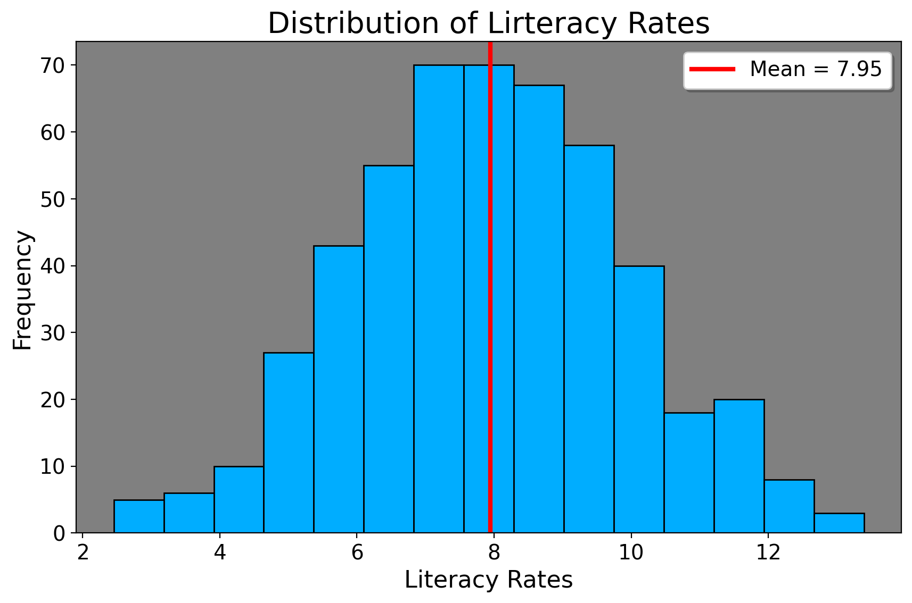
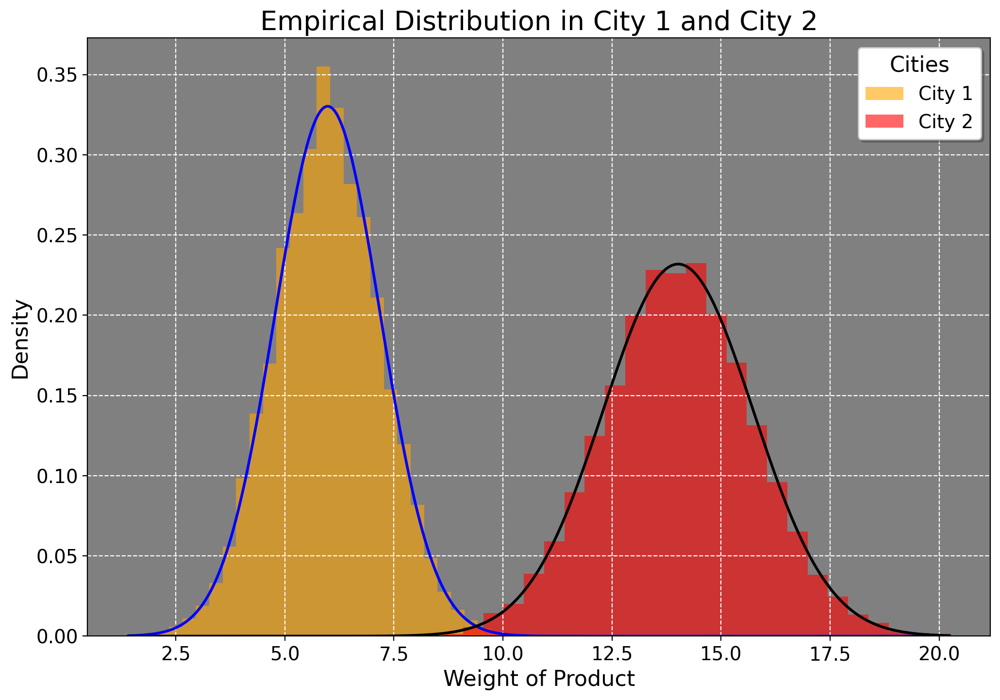

3 Basic Probability Theory
Human beings are awestruck at uncertainty in everyday life. In the elder days, the Greeks consulted Oracles at Delphi, the Vikings Seers, the samurai onmyōji, and, more recently, horoscopes/birth charts to make sense of happenings. Of these, however, only one has taken the throne of mathematical statistics: probability. Probability is a formalized system which allows us, under differing philosophies (Frequentism and Bayesianism), to rigorously make sense of events that occur.
More concretely, probability is a measure of the likelihood that an event will occur. It ranges from 0 to 1, where 0 indicates impossibility and 1 indicates certainty. Generally, there are two kinds of probabilities econometricians and policy analysts are concerned with: discrete random variables and continuous random variables. Why random? Well, because the event may occur or not. If a coin had only heads, only tails, or a die only had the number 1 on it, there’s no uncertainty anymore and probability wouldn’t be needed. But in real life, outcomes are essentially never guranteed. Discrete random variables have finite values they can take on. (heads or tails for the coin). By extension, a continuous random variable can take on infinitely many values. Suppose we have data on the width of a coke can or the amount of time in minutes spent studying. These are uncountable in the sense that they can have so many different values that they can’t be easily counted.
To fix ideas, let’s begin with the idea of a sample space, which we denote by the uppercase Greek letter “Omega”, \(\Omega\). This represents the set of all possible outcomes for some instance or experiment. For example, suppose we have a die of 3 sides numbered 1, 2, and 3, which we cast to see what number faces up. In our case, \(\Omega=\{1,2,3\}\). Any collection of these outcomes we call events. How then do we assign probability to this event? Say we ask for the probability of getting an odd number for a singular die cast, or \(A=\{1,3\}\). What are the odd numbers in \(1,2,3\)? 1 and 3. Since there are two of these, over three possible outcomes, the probability is just two-thirds. Formally, the way we’d write this is \[ \mathbb{E}\left[\mathbf{1}\left\{ A\right\} \right]=1\times P(A)+0\times P(A^{\prime})=\left(2\right)\frac{1}{3}+0=\frac{2}{3} \] Here, \(A\) is our event of interest (getting a 1 or 3), and \(A^{\prime}\) (not A) is the probability of A not occuring.
3.1 Descriptive Statistics
Probability is rarely used in a vacuum, though. We typically, in the policy sciences, wish to take a given outcome from a set of outcomes and draw conclusions from it. To do this, we use descriptive statistics (also called moments) to summarize probabilities. These moments map on to variables aside from coin flips- however to truly understand this, we’d need to introduce integration and other topics in math which we can’t cover here.
3.1.1 Means: Arithmetic and Median
The first moment is called the average/arithmetic mean. The formula for the mean, also called the expected value (denoted by \(\mathbb E\)) is \[ \bar{x} = \mathbb{E}[X]=\frac{1}{N}\sum_{i=1}^{N}x_i \] where \(\bar{x}\) is the mean, \(N\) is the number of values, and \(x_i\) represents the \(i\text{-th}\) value in the sequence. The uppercase Greek letter “sigma” means summation, or \(\sum_{i=1}^{N} x_i\). It adds the values from \(i = 1\) to \(N.\) For a discrete random variable, the expected value is
\[ \mathbb{E}[X] = \sum_{i=1}^{N} x_i \cdot P(x_i). \] So for our die, the expected value is \[ \mathbb{E}[X] = 1 \cdot \frac{1}{3} + 2 \cdot \frac{1}{3} + 3 \cdot \frac{1}{3} = \frac{1 + 2 + 3}{3} = 2 \] For a coin, the expected value (assuming it is fair) is 0.5. Suppose we have a room of 10 men and 40 women, where women take the value of 1 and men the value of 0. The average number of women in the room is \(\frac{40}{50}\). This means the expected value of women in the room is .8. In other words, if we randomly selected a person from the room 10 times, we’d expect about 8 of them to be women. We can take averages with things aside from die and coins too. Naturally, if the amount of water in one giant jug was 5 liters and in another jug there is 7 liters, the average liters of water in the sample is \(\frac{1}{N}\sum_{i=1}^{N} x_i = \frac{1}{2}\sum_{i=1}^{2} 5+7=6\) liters. Now we should distinguish between the population and sample statistics: the sample is that subset of the population that we can get. We can rarely sample every single American in the country (the population), but a random (or representative) sample of 3000 Americans, say, is just fine. This difference is important: outside of simulations, we never can get every single datapoint for all our interventions of interest. So, we collect a sample which approximiates that population we are truly interested in.
The median, or the middle number, is also a type of average. It is less influenced by outliers than the average is. Suppose we have a dataset of years of education across a group of people in a neighborhood, \(A=\{5,6,7,9,18\}\). The middle number here is 7 (since two numbers lie to the let and right of 7). But let’s consider the issue deeper: suppose we were to use the average years of education at the average. For us, we have \[ \frac{1}{5} \times \sum_{i=1}^{5} 5 + 6 + 7 + 9 + 18 =\frac{45}{5}=9 \] The mean and median produce differing values. If we were to use the mean, we’d conclude the average person in this sample is in high school. When in fact, as a raw number, the modal respondent is a middle schooler with one elementary schooler. Thus, we can see that the average is influenced by outliers (in this case, somebody in graduate school). The classic joke is that when Bill Gates walks into a bar, everyone, on average, is a billionaire.
3.1.2 Variance
The variance is the second moment. It represents the average squared differences from a point. For a random variable \(X\), the sample variance is denoted as \(s^2 = \frac{1}{N-1} \sum_{i=1}^{N} (x_i - \bar{x})^2\). For an intuitive example, suppose we have two middle schoolers in a room, one who reads at 6th grade level and the other at 8th grade level, \(A=\{6,8\}\). The sum of squared differences of each of these datapoints from the mean is (7) is 2, since 6 is 1 less than 7, and 8 is 1 more than 7. So, our sample variance is 2. The variance simply reflects the average distance of each data point from the center/mean of our observations. In practice however, we must correct for uncertainty about our sample estimate. So we subtract by 1 in the denominator. This is called Bessel’s correction. Subtracting 1 factors in uncertainty, since practically we are unsure about the “true” average in a population. When we do this, we get \(\frac{2}{2-1}\), making the new bias corrected variance be equal to 2.
The square root of our sample variance is what’s called the standard deviation from the mean. Why standard? The raw variance is not in the same units as our original data. When we take the square root, we may interpret this as the “standardized” distance from the mean. For this simple example of the students, we can round the standard deviation down to 1, since \(\sqrt{2}=1.41\). When we think about it, it makes sense. If you’re at a middle school where the average reading level is 7th grade, people who read at 6th grade level are simply 1 year below the average, and those at 8th grade 1 year more than the average.
Some might wonder why we’re squaring these differences from the mean. The squared differences gives more weight to outliers, or datapoints that are very far from the mean. Suppose \(A=\{6, 8, 18\}\). The average of this is 10.6. Person 1 and 2 are only 4.6 and 2.6 years less than the mean. But someone in middle school with a graduate in college reading level at 18 years is very, very, very far from the mean (practically speaking). The squared differences themselves are 21.79, 7.13, and 53.77, and the sample standard deviation is roughly 6.43. Had we not squared the differences, we’d get a standard deviation of 4.89. So, we square the larger differences to assign more weight to large outliers, since not doing so would basically treat the middle schooler with a college graduate reading level as roughly equal to those who are much closer to the average of 10. The variance is also understood in other contexts like weather.
3.2 Hypothesis Testing
In public policy we oftentimes wish to test hypotheses. A hypothesis is a statement about the world that we wish to determine the validity of. For example, we could hypothesize that the average math score for a scool is 86, or we can hypothesize that black people use welfare less than white people. We are always testing our hypothesis (which we call the research hypothesis, \(H_R\)) against a scenario where this hypothesis is wrong (the null hypothesis, \(H_{0}\)). That is, we start off by assuming the math score is not different from 86 or that blacks and whites use welfare at the same rates. We only change our minds in light of compelling evidence. If this confuses you, imagine we had a courtroom where the burden of proof is now shifted on the defense to prove their client innocent. We would never be okay with presuming guilt. No, we’d presume the null hypothesis is true (the person is innocent until proven guilty), saying that the people making the positive claim of guilt are the ones who must supply enough evidence to convince us otherwise. In research, there are many ways to test a hypothesis, but the first way we will go over for this is by employing a t-test. The t-test produces a t-statistic, or a measure of how extreme our estimated sample mean is relative to a hypothesized mean or comparison group mean. The t-statistic is a measure of how many standard errors away from the population/hypothesized mean our observed mean is.
3.2.1 One Group T-Test
First we cover the one-sample t-test, where we compare our research hypothesis against some known/predefined statistic. If I ask you what you think the average literacy rate is in the population of Americans, you may give different answers like “I think it’s at the 9th grade level”, “I think the average literacy level is less than the 6th grade level” or “I think the average literacy rate is different from 0”. Each of these forms sets of testable hypotheses. In the first case, \(H_R\) is “The literacy rate is equal to 9th grade.” In the second case, \(H_R\) is “The literacy rate is less than the 6th grade level.” Finally, we’d say \(H_R\) for case 3 is “I think the literacy rate in America is not 0” (or, some significant portion of the population can read). Formally, we denote these hypotheses as
\[ \begin{aligned} & H_{R}: L=9 \\ &H_{R}: L < 6 \\ &H_{R}: L \neq 0. \end{aligned} \]
Our corresponding null hypotheses (the one we first assume) is
\[ \begin{aligned} & H_{0}: L \neq 9 \\ &H_{0}: L \geq 6 \\ &H_{0}: L = 0. \end{aligned} \]
we simply take a of sample the population somehow (which is usually taken care of for us in census data/compiled statistics). We then calculate the sample average of the grade level of our sample (ranging from 0 being illiterate and 16+ which means postgraduate). Let’s visualize this.
This is a histogram. It shows a distribution of data. To better conceptualize it, imagine the height of the histogram (the y axis) represents the number of people in the data who take on the values on the x-axis. So, roughly 70 people have a literacy level of 8. In this case I generated a sample of 500 people with a small amount of variance. The average literacy rate in this population is 8 (for 8th grade). We now wish to see if our population mean (of 8th grade) is different from the researcher mean (9, 6, and 0). The formula for the one-sample t-statistic is
\[ t = \frac{\bar{x} - \mu_R}{\frac{s}{\sqrt{n}}}. \] Let’s parse these terms. In the numerator we take the difference of our sample mean (\(\bar x\), the mean we in fact observe in our dataset) versus our hypothetical mean that we are testing our sample mean against, denoted as \(\mu_R\) (“myoo-sub R”). The denominator is the standard error, which is the standard deviation divided by the square root of our sample size. For example, here’s how we’d do this with the null hypothesis for 0 (that is, our sample mean is different from 0).
\[ t = \frac{\bar{x} - \mu_R}{\frac{s}{\sqrt{n}}}=\frac{7.949 - 0}{\frac{1.9983}{\sqrt{500}}}=88.95. \] In other words, the sample mean is 88.95 standard errors away from the hypothesized mean (0 in this case). We can do the analogous thing for reading level 6 and 9, where we substitute 0 in the above formula for those respective numbers. We can do this in Stata like
ttesti 500 7.949 1.9983 0 // sample size, average, standard deviation, hypothesized mean
One-sample t test
------------------------------------------------------------------------------
| Obs Mean Std. err. Std. dev. [95% conf. interval]
---------+--------------------------------------------------------------------
x | 500 7.949 .0893667 1.9983 7.773419 8.124581
------------------------------------------------------------------------------
mean = mean(x) t = 88.9481
H0: mean = 0 Degrees of freedom = 499
Ha: mean < 0 Ha: mean != 0 Ha: mean > 0
Pr(T < t) = 1.0000 Pr(|T| > |t|) = 0.0000 Pr(T > t) = 0.0000
3.2.2 Two-Group T-Test
We can also do a 2-group t-test, where we wish to compare average group differences. We can compare men and women, one city to another city, one city to many cities, and so on. For our purposes though, we’ll just compare one city to another one. I generate a sample of 10000 minutes (the unit of time) where one city has a mean production rate per minute of 6 and another of 14 with respective variances of 1.5 and 3. Say these means represent the average kilowatt usage for electricity, and the variances are how much production is spread out by the minute for each city (where city 2 clearly has a higher variance).

Here is how we’d calculate the t-statistic in this case.
\[ t = \frac{\bar{x}_1 - \bar{x}_2}{\sqrt{\frac{s_1^2}{n_1} + \frac{s_2^2}{n_2}}} \]
Let’s parse these terms. Here \(\bar{x}_i\) is the averge production rate of a city and \(s\) denotes the variance for each city. The numerator represents the raw differences in means, and the denominator represents the pooled standard errors for both cities (recall how we calculated standard error above). Note however here we use the variance, not the standard deviation to compute t. Why? Well, each group may have different levels of spread in its measurements. We need to account for the variability in each sample to see if the means are truly different when we account for this spread in each sample because higher variance increases error. And, in a situation where there’s substantial variability in the data, it makes it much harder to say if the means differ in an appreciable manner. To compute the t-statistic, we plug in the values. For the denominator:
\[ \sqrt{\frac{1.5}{10000} + \frac{3}{10000}} = \sqrt{\frac{1.5 + 3}{10000}} = \sqrt{\frac{4.5}{10000}} = \sqrt{0.00045} \] which yields \[ \sqrt{0.00045} \approx 0.0212. \]
Now, calculate the t-statistic:
\[ t = \frac{6 - 14}{0.0212} = \frac{-8}{0.0212} \approx -377.36 \]
This means that the sample mean difference is 377 standard errors lower than what we’d expect (in this case assuming no difference). We can also infer that City B produces a lot more electricity than City 1.
By the way, we can also do this for other things too. Take the Proposition 99 example. We could take the mean differences in tobacco consumption after 1988, comparing California to other states that did not do the intervention. Here is some sample Stata code (you can use this for your paper, by the way)
clear *
cls
u "https://github.com/jgreathouse9/FDIDTutorial/raw/main/smoking.dta"
ttest cigsale if year > 1988, by(treat) reverse unequal
Two-sample t test with unequal variances
------------------------------------------------------------------------------
Group | Obs Mean Std. err. Std. dev. [95% conf. interval]
---------+--------------------------------------------------------------------
1 | 12 60.35 3.487999 12.08278 52.67297 68.02703
0 | 456 102.0581 1.10465 23.58887 99.88726 104.229
---------+--------------------------------------------------------------------
Combined | 468 100.9887 1.121973 24.27199 98.78393 103.1934
---------+--------------------------------------------------------------------
diff | -41.70811 3.658742 -49.59344 -33.82279
------------------------------------------------------------------------------
diff = mean(1) - mean(0) t = -11.3996
H0: diff = 0 Satterthwaite's degrees of freedom = 13.314
Ha: diff < 0 Ha: diff != 0 Ha: diff > 0
Pr(T < t) = 0.0000 Pr(|T| > |t|) = 0.0000 Pr(T > t) = 1.0000From this, we’d suggest that the average effect of the intervention was a decrease of 41 packs per capita compared to other states that didn’t do the policy. The t-statistic in this case means that our estimate of the mean difference is 11 standard errors below that of the that of the average of states who did not do the policy.
3.3 Uncertainty Around the Mean
Typically we are concerend with the uncertainty of our estimates. Uncertainty around the mean is typically expressed through confidence intervals. A confidence interval provides a range of values that, under certain conditions, contains the true population mean.
3.3.1 Confidence Intervals and the Normal Distribution
To understand confidence intervals, it’s essential to first grasp the role of a normal/Gaussian distribution. The normal distribution is a continuous probability distribution characterized by its bell-shaped curve. We call it a continuous distribution because unlike coin flips, other data points can take on many values such as homicide rates, COVID-19 rates, and other metrics that can’t be broken into simple, countable groups. Most real-world phenomena, when measured, tend to follow a normal distribution (we will return to this in the lecture on asymptotic theory). A normal distribution is defined by its mean (\(\mu\)) and standard deviation (\(\sigma\)). The great thing about a normal distribuition is that we can prove that 68 and 95% of the data lie within 1 and 2 standard deviations of the mean. We will exploit this fact to construct a confidence interval for a statistic of interest.
3.3.2 Constructing a Confidence Interval
The most common confidence interval is the 95% confidence interval. This means that if we were to take many samples and repeat our analysis many times, the confidence interval contains the true average. Typically, we have only one sample to work with (and we rely on large-sample asymptotics to argue for the validity of our confidence intervals), but methods such as bootstrapping (where we simulate many such samples) may be employed to do this too. For our current purposes though, we construct a confidence interval for the population mean \(\mu\), we use the sample mean \(\bar{x}\) and the standard error of the sample mean as we’ve defined them above.
For a 95% confidence interval, we use the critical value from the standard normal distribution, typically denoted as \(t^*\). For a 95% confidence level, \(t^* \approx 1.96\) (since approximately 95% of the data lie within 1.96 standard deviations from the mean in a standard normal distribution). As ones sample size increases, the t-distribution converges to a standard normal distribution. This means 1.96 is a good approximation of a 95% confidence interval for all sample sizes greater than 30; otherwise, a different t-statistic would be used. In the old days, t-tables were used to do this, but now software handles much of this for us. By the way, we can construct other confidence intervals too. We can construct a 90, 99, or even 80% confidence intervals; however in science, we typically use the 95% CI. We usually interpret confidence intervals that contain 0 (say, [-1,1]) as being statistically insignificant. If the CI does not conatain 0 (say, [3,5]), we say it is significantly different from 0 (or, that the means are much different from one another).
3.3.2.1 One Group T-Test CI
I generated a 10,000 person sample of incomes (in 1000s). The true average is 50. We think the average is 60. The variance is 2. To estimate the confidence interval, we compute \[ 0.0277= 1.96 \times \frac{\sqrt{2}}{\sqrt{10000}} \] to get our standard error of the mean. Here, we see that we multiply our critical value of 1.96 by the standard error. This entire expression is our margin of error. Now, in order to characterize the range that the mean falls within, we simply do \[ \text{CI} = \mu \pm \text{Margin of Error}=50 \pm 0.0277=(49.986,50.014). \]
We interpret this as “Our sample mean is 50 thousand dollars. We are 95% confident that given the data, the real mean lies between 49.986 and 50.014 thousand dollars.” Since both these numbers are less than 60, our research hypothesis (\(H_R=60\)) is likely incorrect, as 60 does not fall within these estimates. Therefore, we fail… to reject, the null hypothesis (the hypothesis of no difference).
3.3.2.2 Two-Group T-Test CI
Now, we can revisit the city example from the above and see if the means significantly differ, using the two-group t-test. We typically use this kind of t-test in situations where we wish to compare one group to another. The formula for the CI for the difference between two means is given by: \[ CI = (\bar{x}_1 - \bar{x}_2) \pm t \times \sqrt{\frac{s_1^2}{n_1} + \frac{s_2^2}{n_2}} \]
We know the values from the above, so we plug them in. We also use the critical value of 1.96, since this is the value we use for a 95% CI. First we compute the standard error using the variances and sample sizes for both groups: \[ SE = \sqrt{\frac{1.5}{10000} + \frac{3}{10000}} = \sqrt{\frac{4.5}{10000}} = \sqrt{0.00045} \approx 0.0212. \] We now have a margin of error (using the critical value 1.96 as above) of:
\[ \text{Margin of Error} = t \times SE = 1.96 \times 0.0212 \approx 0.0413 \] We already know the mean difference is -8, so now we just plug that in and solve:
\[ CI = (-8) \pm 0.0413. \]
So, the 95% confidence interval for the difference in means is: \[ (-8 - 0.0413, -8 + 0.0413) = (-8.0413, -7.9587). \]
This interval suggests that City 1 consumes significantly less, on average, than City 2. By the way, for those who are curious, if we just reversed the order of the numerator, we’d get the same result but it would be \((7.9587,8.0413)\), where we’d say that City 2 consumes significantly more than City 1. Using the Stata code block above, we’d say the true effect of the intervention lies between a reduction of 49.59344 to 33.82279 packs per capita, under quite heroic assumptions (but that’s for later).
3.4 A Brief Word on Practical Significance
To conclude, a word of caution: as we can see, the magnitude of the t-statistic and tightness of the CIs tend to scale with sample size. Consider the two group case: \[ t = \frac{\bar{x}_1 - \bar{x}_2}{\sqrt{\frac{s_1^2}{n_1} + \frac{s_2^2}{n_2}}}. \]
We can see that an increase in the sample size leads to a decrease in the overall denominator. Suppose for the denominator \(s^2=4\) for both groups. If both groups have the size of 40, then we just have \(\sqrt{.1+.1}\). But if both groups have a sample size of 400, the then we have \(\sqrt{.01+.01}\). The reason this matters is because researchers oftentimes interpret the t-statistic and whether it’s greater than 1.96 as a measure of practical importance. But this is wrong! Since our t-statistic is guaranteed to increase with sample size, per the formulae above, at certain sample sizes it would be hard for our confidence intervals to contain 0 at all.
What this means as a matter of practicality is to always keep in mind your sample size and what would matter practically to people in real life. If you estimate that the price of one brand of bottled water, for example, costs 0.05 dollars more than another brand across all 50 states, and your t-statistic is 70 and your CI is [0.01,0.06], then do not claim (in isolation anyways) that this difference is very meaningful or earth-shattering, since they make either a penny more or 6 cents more. I say this because I do not want for you, in real life or in your papers, to apply these ideas mechanically. I want you to always keep in mind how statistics maps on to the real world. The t-statistic for a correlation coefficient or regression coefficient can be statistically significant but practically uninformative.
3.5 Summary
Probability theory is the stepping stone into using statistical methods for policy analysis. It is the foundation of decision-making in business, economics, and policy studies. It allows us to, in a principled way, approach the understanding of problems in a data driven, informative manner by taking simplified models and applying them to real world ideas. For many, the concepts covered here will be new material– indeed, the term “statistics” or “data analysis” can be intimidating to people at first glance. I believe the best way to introduce these topics is to keep a balanced perspective between technical mathematics and application. However, this course only scratches the very surface; the world of quantitative methods in policy analysis is a big one. For those of you interested in graduate school or who wish to use statistics for your future job, your mastery of this very essential material will not be in vain.